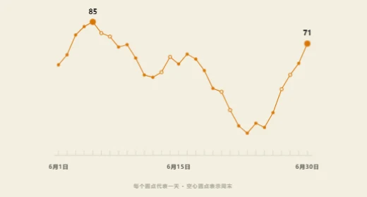
F2
逐日折线
逐日观察访问量，可据此设计 PV、UV 双线趋势。
HTML 参考示例1.6.0 页面实现
LIGHTHOUSE DESIGN SYSTEM
按用途选图，查看真实图形与复用状态。样稿仅使用演示数据。
查看图形、数据形状与实现状态。点击缩略图可查看完整交互。
比较连续时间里的变化。

逐日观察访问量，可据此设计 PV、UV 双线趋势。
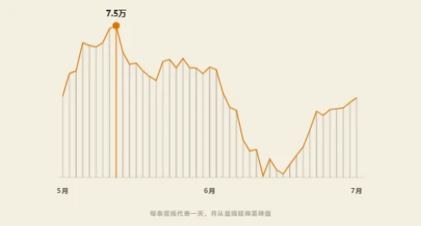
日序列（30–60 天，看形态）
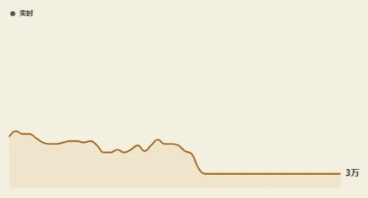
实时滚动序列
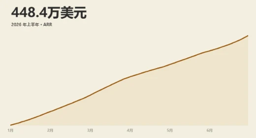
累计增长（一条线+一个大数）
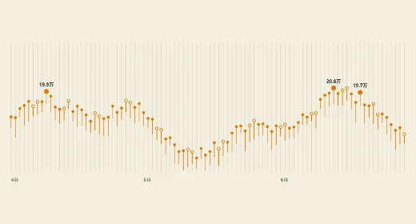
每天一个读数的日序列（90 天级）
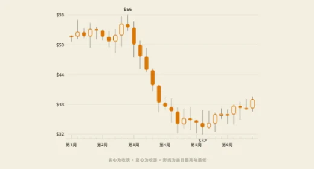
OHLC 四值时间序列，空心=涨、实心=跌
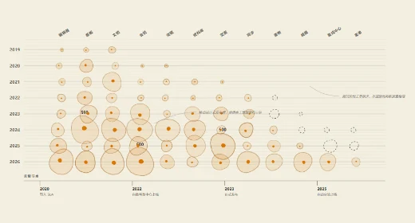
分类×年份+量+状态，大跨度（手绘 blob）
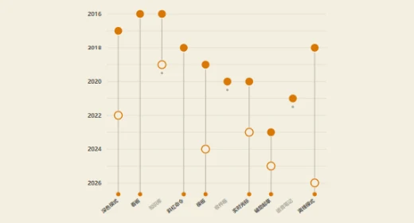
事件序列生命史（首发/重做/休眠/存活）
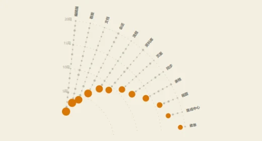
多实体各带出生时间+当前规模
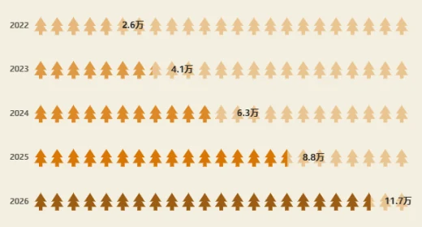
逐年计数（一个符号=固定数量）
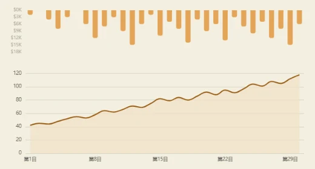
双序列因果（投入 vs 产出）
按实际日期或两个维度寻找集中出现的时段。
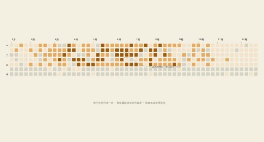
把一年内逐日的访问次数排成方格，比较活跃日期。
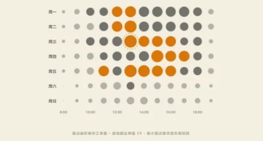
星期×小时×量（小热力）
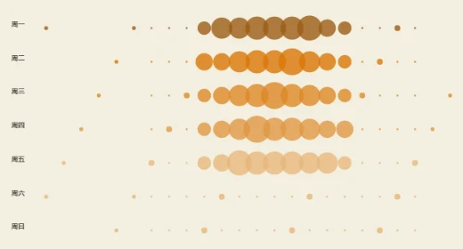
星期×小时×量（punch card 数据）
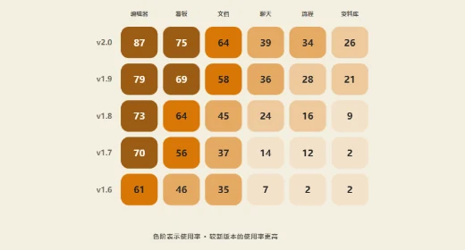
两个离散维度 × 数值，≤60 格，每格直接读数
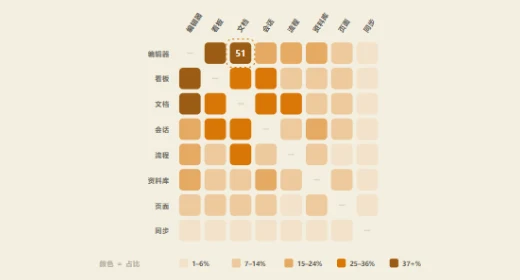
两个离散维度 × 数值，≤100 格，保留矩阵结构与重点格
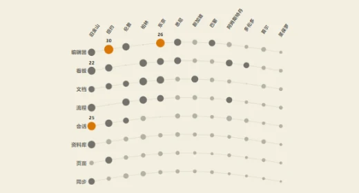
分类×分类+量，小数据（≤100 格）
比较谁更高、相差多少，或名次如何变化。
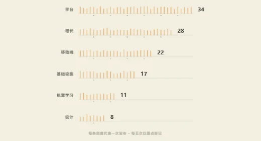
用同一刻度比较少量模块或部门的访问量。
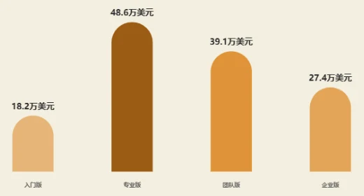
少类目排名比较（≤6）
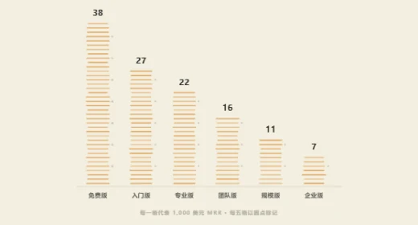
少类目比较（≤8），单位可数
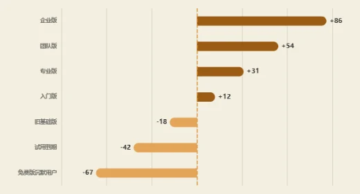
有正负的分类数值
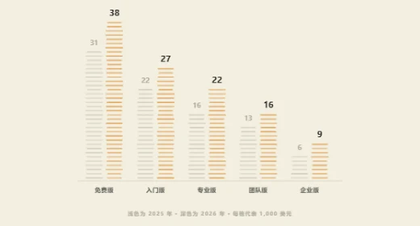
分组对比（每类 2 系列，如今昔）
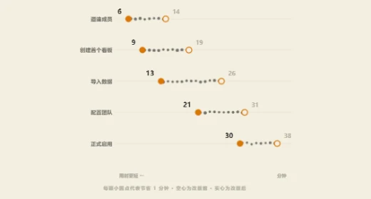
类目级前后对比（≤6 类，串珠=真单位）
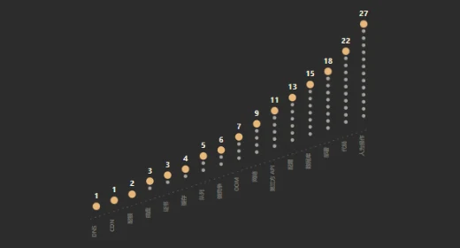
排名比较，可数单位（unit chart）
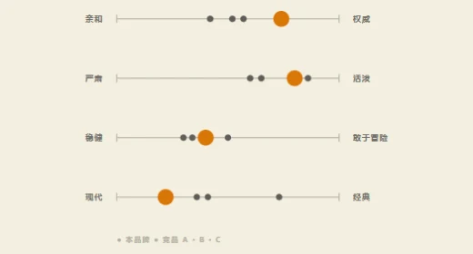
双极量表（两端都是合法位置）+ 竞品对照
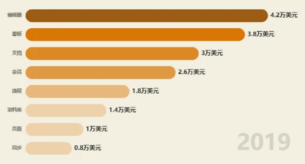
排名随时间演变
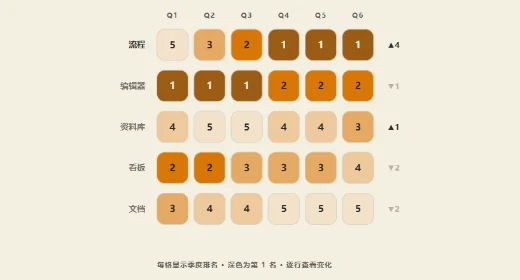
多实体排名随离散时间变化，适合静态印刷
查看整体中每部分的占比，以及阶段之间的增减。
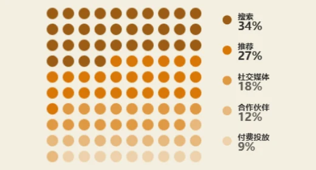
看不同入口各占总访问量的多少。
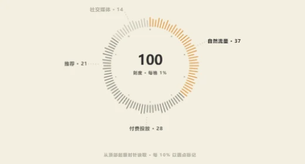
100% 构成（≤6 段）
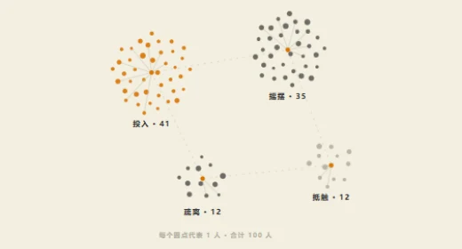
100% 构成（占比），≤6 类小数据
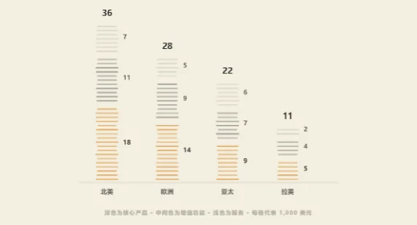
堆叠构成（≤4 类 × ≤3 段）
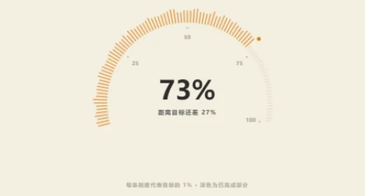
单值进度（0–100%）
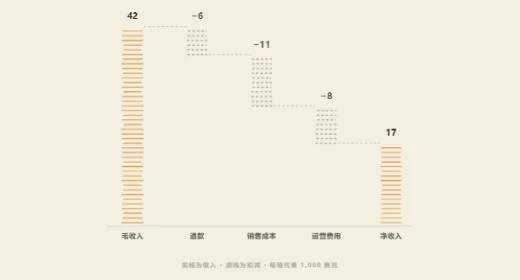
瀑布 / 增减分解（≤6 级）
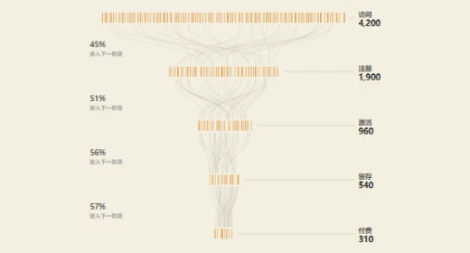
分阶段递减人数（漏斗）
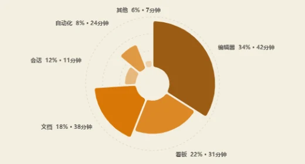
双编码：占比(角)×强度(径)
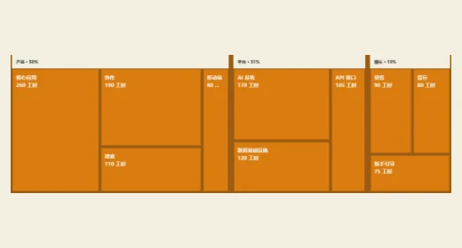
两层层级 + 正数权重，矩形面积=数值
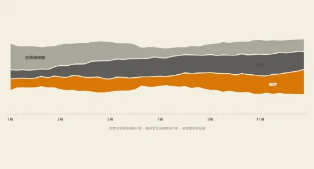
2–5 个系列的构成随连续时间变化，同时看总量
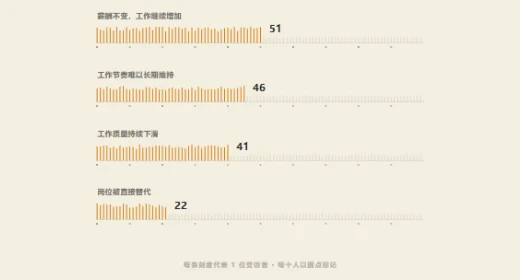
多选题百分比（各项独立 0–100），≤6 项
比较分组、频次、区间和异常值。
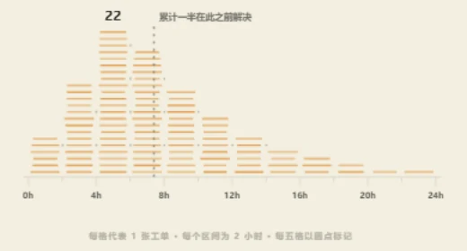
按响应时长等连续值分箱，观察分布。
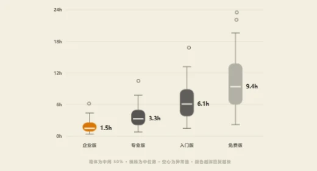
分组五数概括 + 异常值，原始分布可被汇总
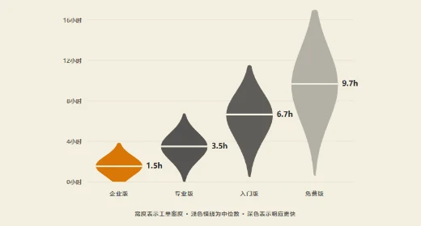
分组连续分布的密度轮廓 + 中位数
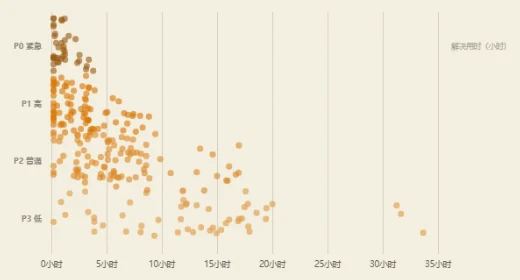
分组分布，逐条记录（几百点）
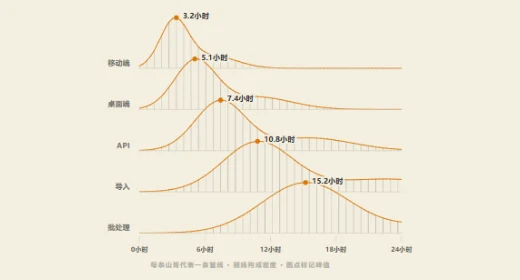
3–8 组连续分布的密度形状比较
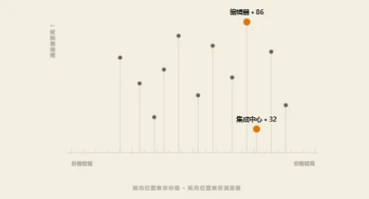
二维散点（≤20 点）
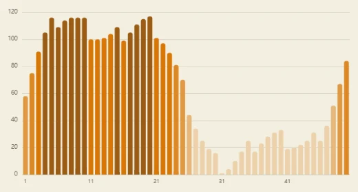
多类目分布（30–60 根）
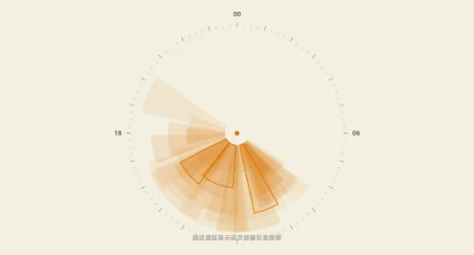
逐事件叠加：时刻(角)×规模(径)，透明度=密度
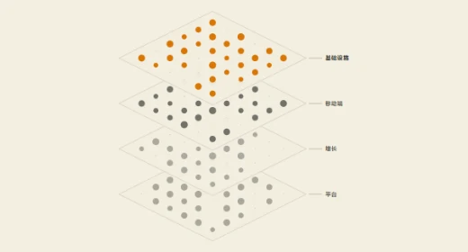
多组×网格×量，等距堆叠
查看实体之间的归属、连线、流量和多维关系。
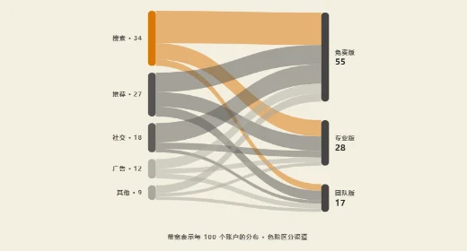
按起点、终点汇总流量，观察模块之间的去向。
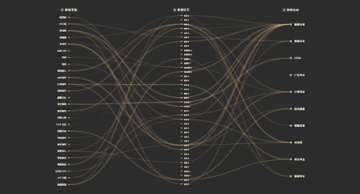
三段路径 100+ 条丝线
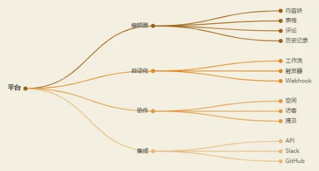
层级结构（2–3 层）
多对一归属+逐条名单（≤50 条）
网络，≤12 节点
中心+卫星网络，≤15 节点
中心+卫星网络，海报版
网络 60 节点环形弦膜
网络 180 节点力导向星系
多对一归属，不丢明细（≤60 条）
同一实体集跨 3–6 个连续维度，一线一实体
同一实体集的三个维度轮播
比较有真实地理边界的区域数值。
美国州级区域 + 非负数值，明度=数值
世界国家级区域 + 非负数值，明度=数值
为已有设计稿和旧链接保留的两个图型。
每天一个区间（min–max）的日序列
单变量分类计数，≤8 类且近似等分
LANTERN ORIGINALS
同一份访问与使用样例，分别用于会议讲解和独立阅读。
01 / 演示报告
逐页说明访问规模、趋势、模块分布与 AI 使用，支持键盘翻页。
02 / 整页报告
在同一张报告中查看结论、逐日数据、图例与统计口径，可打印归档。
做产品 UI，先查项目组件；选中图型后再打开对应样例。
指标卡 LhMetricTile 和表格容器 LhDataTableShell 已从共享组件库导出。图库卡片中的 HTML 示例用于参考绘制和交互。
访问日历按北京时间逐日统计访问次数。访问趋势展示每日 PV、UV，员工榜单按查询权限展示。
查看选型与接入说明 →暖纸底色、墨色正文、琥珀主数据、黄铜辅助序列。小字号使用对应的深色文字角色。
查看规范中的颜色角色 →Lieflat 源项目的演示、报告和案例，供研究布局与图表叙事。